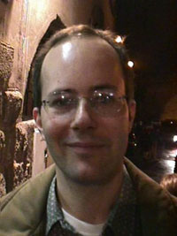

http://people.panservice.it/pa2278
pavan@panservice.it
Luca Pavan was born on May 5, 1969, in Rome. He accomplished musical studies at
the Conservatoire of Music of Latina: in 1992 he got a degree of Pianoforte, in
1996 gained full marks for a degree of Electronic Music, in 1997 a degree of
Musical Composition. Presently he is attending the University of Rome "La
Sapienza", writing a final thesis of history of music for the Faculty of
Literature. He wrote a number of pieces for instruments of the traditional
classic music and in 1993 worked to a new orchestration of the opera Lo frate
‘nnamorato by G. B. Pergolesi (1710-1736), which was performed in Rome in the
same year. From 1992 he is particularly active in Computer Music and realized
musical works with the software packages Music5 and Csound. He also wrote some
utility programs which can help the composers to realize musical pieces with
computer. He participated in conferences about Computer Music; his compositions
were performed in Italy and other European countries. In 1995 one of his
electroacoustic works (Code, 1994) was performed during the XI Colloqium on
Musical Informatics (Bologna, Italy, 1995). His piece Zone d'ombra (1995-96) has
been selected and performed during the ICMC’97 (Thessaloniki, Greece, 1997) and
the Festival de Sound Synthese 1998 (Bourges, France, 1998). His tape piece The
Impossible Planet was performed during the XII Colloqium on Musical Informatics
(Gorizia, Italy, 1998), and the pieces Four Town Landscapes and Euro! have been
selected for a performance at the ICMC’99 (Beijing, China). He was Government of
Canada Award Holder at the Simon Fraser University (Vancouver, Canada) for a
working period with the Canadian composer Barry Truax in the year 1998.
Luca Pavan
Via Uccellara 7
04100 Latina
Italy